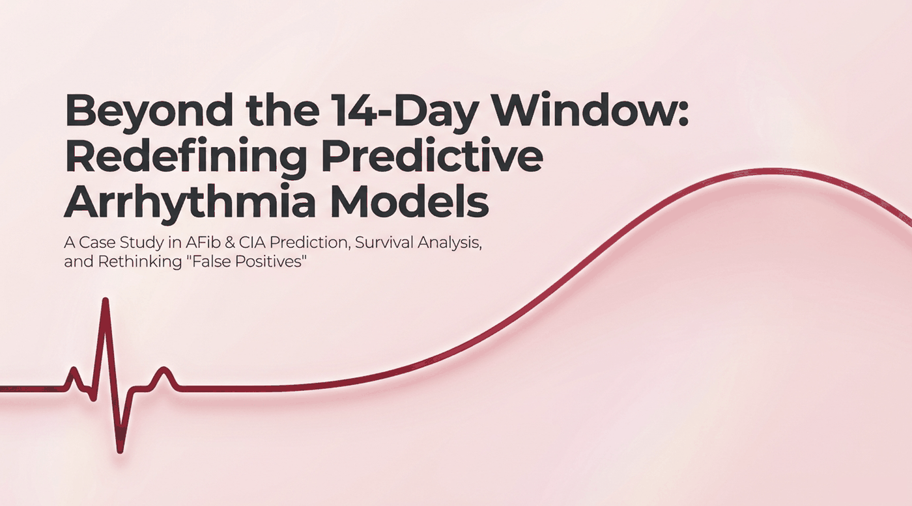
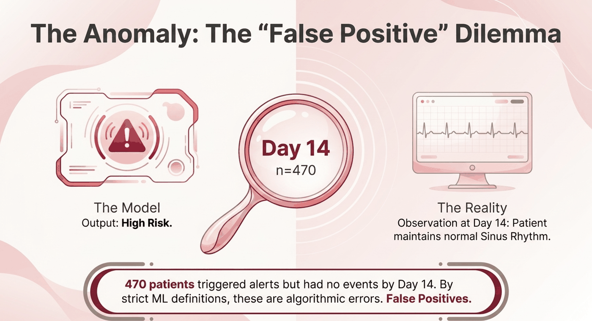
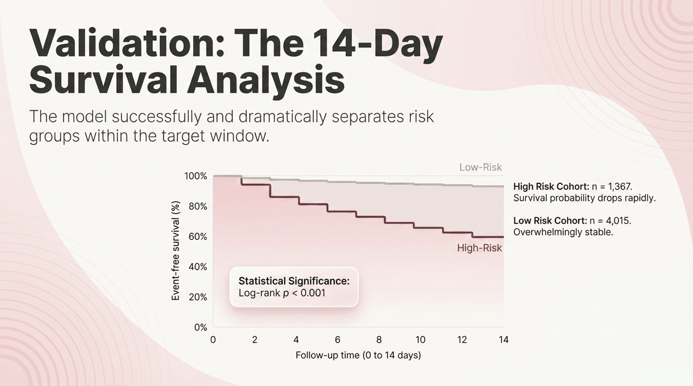
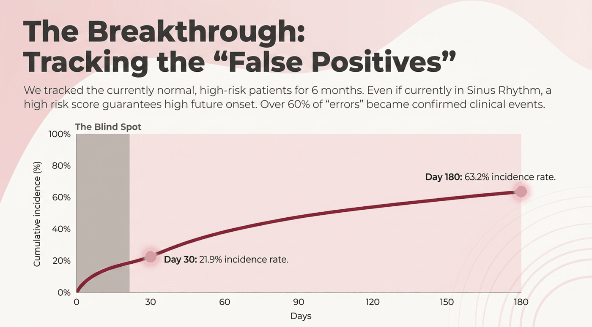
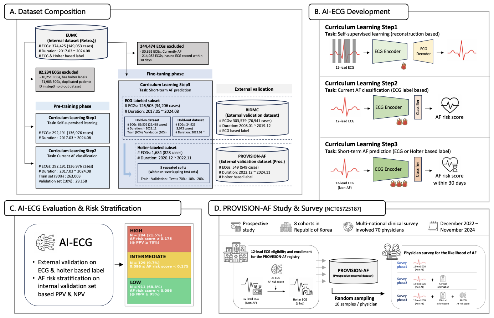

Rather than detecting arrhythmia after the fact, this project aimed earlier: pre-training and fine-tuning 12-lead ECG foundation models to forecast onset up to 14 days out, across 27 arrhythmia subtypes. Those subtypes roll up into two forecasting targets: Atrial Fibrillation (AFib) and Clinically Important Arrhythmia (CIA), a broader category spanning atrial arrhythmia, ventricular fibrillation, and bundle branch block. AFib technically falls inside CIA's atrial arrhythmia group, but it's common enough on its own that it gets forecast as its own target instead of being folded into the aggregate.
Getting clean signal in meant writing custom XML parsers for medical-device integration, and getting a trustworthy result out meant tracking false positives across patient subgroups using survival analysis — a forecasting model is only as useful as its false-alarm rate is low.
Operational test performance, 14-day forecast horizon.
| Target | Input | AUROC | AUPRC | Sens | Spec | N | Prevalence |
|---|---|---|---|---|---|---|---|
| AFib (14-day) | 12-lead | 0.909 | 0.364 | 0.917 | 0.791 | 2,493 | 0.029 |
| AFib (14-day) | Lead I | 0.832 | 0.239 | 0.847 | 0.704 | 2,493 | 0.029 |
| CIA (14-day) | 12-lead | 0.798 | 0.389 | 0.728 | 0.778 | 2,493 | 0.103 |
| CIA (14-day) | Lead I | 0.762 | 0.316 | 0.693 | 0.733 | 2,493 | 0.103 |

A model that flags a patient as high risk within 14 days, and then sees nothing happen by day 14, looks like it made an error. That framing misses what a forecasting model is actually doing: predicting elevated risk, not a fixed appointment. Extending follow-up to 6 months told a different story.

470 patients were flagged high risk but showed no event by day 14. Under a strict binary read, that's 470 false positives.

Kaplan-Meier curves within the 14-day window: the high-risk group's event-free survival drops far faster than the low-risk group's (log-rank p < 0.001), confirming the risk score is doing real separation even before day 14

Tracking that same "false positive" cohort out to 6 months: 63.2% went on to have a confirmed clinical event anyway. Most of the 14-day "errors" weren't errors, they were just early. That's the argument for evaluating a forecasting model on survival curves instead of a single-point confusion matrix.

Model architecture & pretraining setup